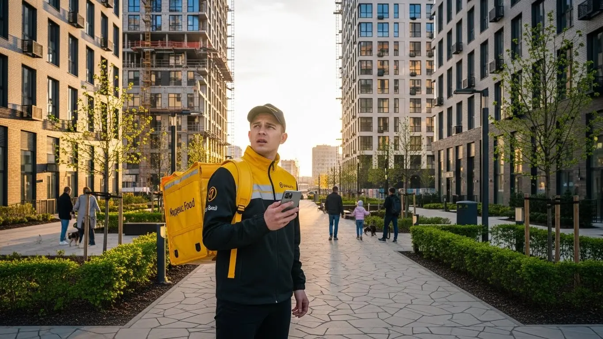
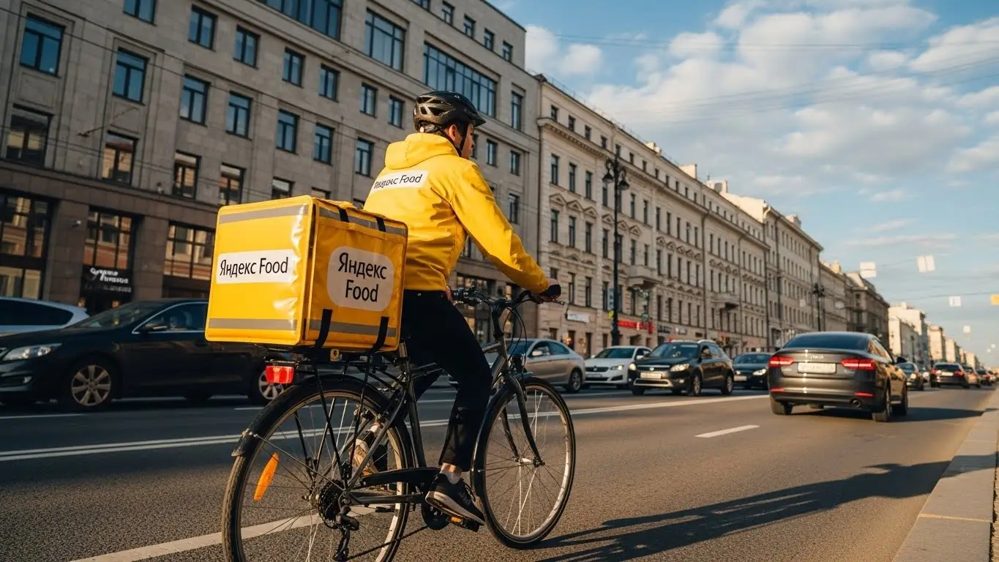

Работа курьером Яндекс Еды в Набережных Челнах 2025-2026: доход, график
- Работа курьером Яндекс Еды в Набережных Челнах: для кого эта вакансия и что вы получите
- Сколько вы будете зарабатывать курьером в Набережных Челнах: калькулятор дохода и разбор выплат
- Реальный заработок курьера в Набережных Челнах: смены и месячный доход
- График работы и форматы занятости
- Требования к кандидату и документы
- Самозанятость, налоги и юридическая чистота
- Пошаговое оформление и первый выход на линию в Набережных Челнах
- Пешком, на вело или на авто: что выгоднее в Набережных Челнах
- Районы, маршруты и «топовые» зоны заказов в Набережных Челнах
- Безопасность, страховка, штрафы и оплата простоя
- Плюсы и возможные минусы работы курьером в Набережных Челнах
- Реальные истории и отзывы курьеров из Набережных Челнах
- Короткие ответы на главные вопросы
- Итоги и ваш следующий шаг
Все города
Думаешь о работе курьером Яндекс Еды в Набережных Челнах? Отличная идея, если знаешь, куда идёшь. Но давай честно: не все так просто, как кажется в рекламных объявлениях. Боишься низкого дохода, непонятных штрафов, или того, что «убьёшь» свою машину на наших дорогах, особенно когда пробки на проспектах Мира или Московском в час пик? Это нормально. Я сам через это прошёл и знаю, как важно получить реальную информацию, а не красивые обещания. Эта статья – твой личный гид по работе курьером Яндекс Еды именно в Набережных Челнах, без прикрас.
Многие новички приходят в Яндекс Еду, думая, что это легкие деньги, но быстро разочаровываются. Почему? Потому что не понимают «внутрянку» работы именно в Набережных Челнах. Одно дело – читать общие статьи, другое – знать, сколько реально уходит на бензин или обслуживание велика, как правильно платить налоги самозанятого, и как система рейтинга влияет на твои заказы. А еще есть особенности логистики: где-то в Новом городе заказов больше, а в Комсомольском районе свои нюансы. Незнание местной специфики – это прямые потери времени и денег, и, поверь, новички в Набережных Челнах часто наступают на одни и те же грабли.
В этой статье я не буду лить воду. Мы разберём всё по полочкам: какой формат работы курьером Яндекс Еды в Набережных Челнах выгоднее – пеший, на велосипеде или на авто. Выясним, сколько реально можно заработать в час и в месяц, посчитаем чистый доход с учетом всех расходов. Покажу на примерах, какие районы города считаются «рыбными» и где лучше работать в разное время суток. Расскажу, как погода и сезоны влияют на спрос, за что можно получить штраф и как их избежать. А еще сравним Яндекс Еду с другими доставками в Набережных Челнах и почитаем отзывы реальных местных курьеров. Если ты живёшь в Набережных Челнах, то подробнее про работу курьером Яндекс Еда в Набережных Челнах можно почитать здесь: работа курьером Яндекс Еда в Набережных Челнах. Там есть краткая сводка условий, FAQ, детальный калькулятор и форма заявки.
Меня зовут Алексей, и я не понаслышке знаю, что такое работа на себя в Набережных Челнах. Сам не один год крутил баранку и педали по Челнам, а сейчас еще и небольшим таксопарком-партнёром управляю. Так что, про все подводные камни и «фишки» курьерской работы в нашем городе знаю не из интернета, а из личного опыта. Давай по порядку, сейчас всё разложу по полочкам, чтобы ты мог принять взвешенное решение и начать зарабатывать по-настоящему, а не просто тратить время.
Прежде чем мы углубимся в детали, предлагаю быстро пробежаться по основным моментам, чтобы ты сразу понял, о чём пойдёт речь.
Что ты точно узнаешь из этого разбора по Набережным Челнам
В этой статье ты ТОЧНО узнаешь:
- Сколько реально можно заработать за смену и месяц в Набережных Челнах на разных видах транспорта?
- Как выбирать районы и слоты в «Яндекс Про», чтобы получать максимум заказов и не тратить время впустую?
- За что можно получить штраф или потерять рейтинг, и как этого избежать?
- Какой вид транспорта (пеший, вело, авто) выгоднее всего для работы в Набережных Челнах?
- Нужно ли оформлять самозанятость, и сколько налогов придется платить?
- Что такое оплата простоя и как она защищает твой доход в «мёртвые» часы?
А если тебе некогда читать всю статью — переходи сразу к заключению, где ты найдёшь короткие ответы на все эти вопросы и указания, в каких разделах искать подробности.
А чтобы наглядно представить, как всё устроено, взгляни на эту инфографику.
Ключевые цифры работы курьером Яндекс Еды в Набережных Челнах
Доход в час
350–450 ₽
Средний заработок в активные часы с учетом бонусов и коэффициентов.
Доход за смену (8 ч)
2 800–3 600 ₽
Потенциальный доход за полноценную рабочую смену.
Гибкость графика
От 2 часов в день
Выбирайте удобные слоты и длительность работы самостоятельно.
Пиковые коэффициенты
До 1.8x
Множитель к базовой ставке в часы высокого спроса (обед, ужин, плохая погода).
Средние расходы
150–300 ₽/смена
Оценка затрат на топливо/амортизацию (для авто/вело) и мобильную связь.
Работа курьером Яндекс Еды в Набережных Челнах: для кого эта вакансия и что вы получите
Кому подойдёт эта работа в Набережных Челнах
Ищешь гибкий график и стабильный доход в Набережных Челнах? Работа курьером Яндекс Еды — отличный вариант. Эта вакансия идеально подходит студентам, желающим совмещать учёбу с подработкой, или людям без опыта, стремящимся быстро освоить новую профессию. Здесь не требуется специального образования; главное — желание работать и быть ответственным. Многие выбирают эту работу, чтобы стать пешим, вело- или автокурьером.
Водители часто используют свой автомобиль для дополнительного заработка в свободное время. Гибкий график, который ты настраиваешь через приложение Яндекс Про, позволяет самостоятельно планировать смены. Это особенно ценно для тех, кому важна свобода и возможность быстро получать ежедневные выплаты. Это не просто подработка, а полноценная возможность зарабатывать в удобном ритме, даже если ты самозанятый.

Главные преимущества для жителей районов Автозаводский район, Центральный район, Комсомольский район
Одно из ключевых преимуществ работы курьером Яндекс Еды в Набережных Челнах — возможность работать рядом с домом. Ты можешь выбирать слоты в своём районе, что значительно экономит время и силы на дорогу. Например, жителям Автозаводского района удобно брать заказы из крупных торговых центров, таких как ТЦ «Торговый квартал», и доставлять их по соседним кварталам.
Если ты живёшь в Центральном районе, то сможешь эффективно работать в плотной застройке, где много кафе и ресторанов, а также офисных центров. Курьеры из Комсомольского района, в свою очередь, могут сосредоточиться на доставках в своём секторе, обслуживая жилые комплексы и местные магазины. Такой подход позволяет не тратить часы на поездки через весь город, а сразу выходить на линию и начинать зарабатывать.
Краткое обещание по доходу и условиям
В Набережных Челнах курьеры Яндекс Еды могут рассчитывать на вполне достойный заработок. За одну смену, в зависимости от её продолжительности и выбранного типа доставки (пеший, вело или авто), можно заработать от 1500 до 4000 рублей. При полной занятости, работая 5-6 дней в неделю, твой месячный доход может достигать 60 000 – 90 000 рублей. Это хорошая зарплата.
Важное условие — это ежедневные выплаты, которые позволяют тебе контролировать свои финансы и получать деньги на карту без задержек. Кроме того, ты сам выбираешь, когда и сколько работать, благодаря свободному графику в приложении Яндекс Про. И самое главное, начать можно без опыта, ведь Яндекс Еда предоставляет необходимое обучение и даже термокороб.
Кейс из практики:
Мой знакомый, студент КФУ в Набережных Челнах, по имени Руслан, работает пешим курьером в Центральном районе. Он выходит на смены по 4-5 часов после пар, обычно с 17:00 до 22:00. В среднем, за вечер ему удаётся выполнить 8-10 заказов, зарабатывая около 2000-2500 рублей. За месяц, работая 4-5 раз в неделю, он стабильно получает около 40 000 рублей, что для студента — отличная прибавка к стипендии.
Вывод по разделу:
Работа курьером Яндекс Еды в Набережных Челнах доступна практически каждому, кто ищет гибкость и возможность хорошо зарабатывать. Эта вакансия особенно выгодна тем, кто хочет работать рядом с домом и получать деньги ежедневно. Чтобы максимизировать свой доход, выбирай слоты в районах с высоким спросом, таких как Автозаводский или Центральный, и не бойся брать заказы в часы пик. Стать курьером Яндекс Еды легко, даже без опыта.
Сколько вы будете зарабатывать курьером в Набережных Челнах: калькулятор дохода и разбор выплат
Из чего складывается доход курьера
Доход курьера в Набережных Челнах, работающего с Яндекс Едой или Яндекс Доставкой, складывается из нескольких ключевых составляющих. Во-первых, это базовая оплата за каждый выполненный заказ, которая зависит от его сложности и типа. Во-вторых, ты получаешь доплату за расстояние, пройденное от ресторана до клиента, что особенно актуально для автокурьеров, работающих по всему городу.
Кроме того, существуют повышающие коэффициенты, которые активируются в часы пик, в плохую погоду или в районах с высоким спросом. Это могут быть вечера пятницы, выходные или дождливые дни. Не забывай и про бонусы от сервиса за выполнение определённого количества заказов или за работу в определённые часы, которые отображаются в Яндекс Про. Конечно, чаевые от благодарных клиентов тоже составляют приятную часть заработка. Важный момент — это оплата простоя: если ты вышел на слот, а заказов временно нет, сервис компенсирует тебе это время, что даёт уверенность в доходе. Также возможна компенсация проезда для некоторых типов заказов. Для самозанятых курьеров предусмотрено страхование во время доставок.

Как пользоваться калькулятором дохода
Чтобы прикинуть свой потенциальный заработок, используй калькулятор дохода. Это простой инструмент, который поможет тебе сориентироваться в условиях. Сначала выбери тип доставки: пеший, вело- или автокурьер. От этого зависит базовая ставка и дальность заказов.
Затем укажи, сколько часов в день и сколько дней в неделю ты планируешь работать. Например, 4 часа в день, 5 дней в неделю. На выходе калькулятор покажет тебе примерный дневной и месячный доход, учитывая средние показатели по Набережным Челнам. Это даст тебе общее представление о том, сколько можно заработать, и поможет спланировать график работы.
Твой потенциальный доход курьера в Набережных Челнах
8 часов в день
5 дней в неделю
Примерный доход в месяц:
0 ₽
Это примерный расчёт на основе усреднённой ставки для Набережных Челнов.
Реальный доход может отличаться в зависимости от бонусов, коэффициентов,
типа транспорта и активности.
На нашей региональной странице ты найдешь подробные условия, ответы на частые вопросы, а также форму для быстрой заявки: работа курьером Яндекс Еда в твоём городе.
Примеры расчёта для пешего, вело- и авто‑курьера в Набережных Челнах
Давай рассмотрим несколько реальных сценариев для Набережных Челнов. Пеший курьер Яндекс Еды, работающий в центре города, например, в районе проспекта Мира, может за 6-часовую смену в будний день выполнить 10-12 заказов. При средней стоимости заказа с учётом расстояния и небольших коэффициентов, его доход составит около 2000-2500 рублей.
Велокурьер, курсирующий между спальными районами, такими как Новый город и Автозаводский район, за 8 часов активной работы в выходной день может заработать до 3500-4000 рублей. Здесь играют роль скорость доставки и возможность быстро перемещаться между точками, избегая пробок.
Автокурьер, который готов брать заказы по всему городу и даже в пригородные зоны, например, в Тукаевский район, за полную 10-часовую смену в пиковые часы может заработать 5000-6000 рублей. Это возможно за счёт дальних заказов с высокими коэффициентами и бонусами за оперативность в Яндекс Доставке.
Кейс из практики:
Мой знакомый, автокурьер Олег, живёт в Набережных Челнах и работает в основном по вечерам и выходным. Он предпочитает брать слоты с 18:00 до 23:00, когда спрос на доставку еды из ресторанов особенно высок. За 5 часов работы в пятницу вечером он обычно выполняет 8-10 заказов, часто с повышенными коэффициентами, и зарабатывает около 3000-3500 рублей. За месяц, работая таким образом 3-4 раза в неделю, его дополнительный доход составляет около 40 000-50 000 рублей.
Вывод по разделу:
Твой заработок курьером в Набережных Челнах зависит от многих факторов: типа транспорта, времени работы и активности. Важно понимать, что доход складывается не только из оплаты за заказ, но и из бонусов, коэффициентов и оплаты простоя. Используй калькулятор дохода, чтобы прикинуть свои возможности, и не забывай, что самые «рыбные» часы — это вечера и выходные, когда повышающие коэффициенты могут значительно увеличить твою зарплату. Работа курьером Яндекс Еды предлагает гибкие условия и возможность получать стабильный доход.
Реальный заработок курьера в Набережных Челнах: смены и месячный доход
Давай разберемся, сколько реально можно заработать курьером в Набережных Челнах. Это не абстрактные цифры, а мой опыт и наблюдения за парком. Доход в Яндекс Еде или Яндекс Доставке зависит от многих факторов: сколько часов ты готов работать, на чем доставляешь и, конечно, от твоей смекалки. В городе есть свои особенности, которые нужно учитывать, чтобы получать максимальную зарплату. Даже без опыта, начать работу курьером в Яндексе вполне реально.
Диапазон дохода для подработки и полной занятости
Если говорить о подработке, то за 2–4 часа в день в Набережных Челнах пеший курьер может рассчитывать на 800–1500 рублей. Велокурьер, благодаря большей мобильности, за то же время часто выходит на 1200–2000 рублей, особенно если работает в Центральном или Автозаводском районах, где много ресторанов и жилых комплексов. Автокурьер за 2–4 часа в пиковые часы может заработать 1500–2500 рублей, выполняя более дальние заказы.
При полной занятости, то есть 8–10 часов в день, цифры, конечно, выше. Пеший доставщик в Набережных Челнах, активно работая в плотных районах вроде Нового города или вокруг ТЦ «Эссен», может получать 3000–5000 рублей в день. Велокурьер, который хорошо знает город и умеет объезжать пробки, выходит на 4000–6500 рублей. Самый высокий заработок традиционно у водителей-курьеров. При полной занятости и грамотном выборе слотов они могут зарабатывать 6000–10000 рублей в день, особенно если берут заказы по всему городу и в Тукаевский район.
Вот тебе пример из практики: мой знакомый, студент из КФУ Набережных Челнов, работает пешим курьером по вечерам в Автозаводском районе. Он выходит на 3-4 часа после пар и забирает 1200-1800 рублей. В выходные, если работает полный день, его доход достигает 4500-5000 рублей. По его словам, главное — не лениться и брать заказы без долгих перерывов.
| Тип курьера | Подработка (2-4 часа/день) | Полная занятость (8-10 часов/день) |
|---|---|---|
| Пеший курьер | 800–1500 ₽ | 3000–5000 ₽ |
| Велокурьер | 1200–2000 ₽ | 4000–6500 ₽ |
| Автокурьер | 1500–2500 ₽ | 6000–10000 ₽ |
В итоге, сколько зарабатывает курьер в Яндексе, зависит от его активности и выбранного формата. Если ты готов работать полный день, особенно на своем авто, твой месячный доход может достигать 90 000 – 150 000 рублей и выше, с возможностью получать ежедневные выплаты. При этом важно помнить, что работа курьером в Яндекс, как правило, предполагает оформление самозанятости, что дает гибкость и официальный доход. Главное — не бояться экспериментировать с графиком и районами, чтобы найти свои «рыбные» места.

Как район, время суток и погода влияют на доход
В Набережных Челнах, как и везде, есть свои пики и спады. Самые выгодные часы — это, конечно, обеденное время (с 12:00 до 14:00) и вечер (с 18:00 до 22:00), особенно в выходные. В эти периоды спрос на доставку еды и товаров резко возрастает, а вместе с ним растут и повышающие коэффициенты в приложении «Яндекс Про». Это значит, что за каждый заказ ты получишь больше денег.
Район тоже играет огромную роль. В Центральном и Автозаводском районах, где сосредоточено большинство бизнес-центров, торговых комплексов (например, ТЦ «Сити Молл») и жилых домов, заказов всегда больше. В Комсомольском районе, особенно ближе к промзонам, спрос может быть ниже, но зато заказы часто бывают более дальними, что компенсируется оплатой за расстояние.
Погода в городе — отдельная история. Зимой здесь бывают крепкие морозы и снегопады, а летом — жара и ливни. В плохую погоду, когда большинство людей предпочитает оставаться дома, количество заказов резко увеличивается, а курьеров на линии становится меньше. Это идеальное время для заработка: повышающие коэффициенты могут быть очень высокими, а клиенты чаще оставляют хорошие чаевые, ценя твой труд. Не бойся выходить в дождь или снег — это твоя возможность заработать больше.
Советы по увеличению заработка от опытных курьеров
Чтобы реально увеличить свой заработок, нужно действовать умно. Во-первых, всегда старайся брать слоты в пиковые часы и дни. Это вечера будней и все выходные. Именно тогда максимальный спрос и самые высокие коэффициенты. Не забывай про праздники — это золотое время для курьеров Яндекс Еды и Яндекс Доставки.
Во-вторых, выбирай зоны с умом. В Набережных Челнах это, как правило, Центральный и Автозаводский районы. Если ты пеший или велокурьер, сосредоточься на плотной застройке, где много ресторанов и кафе. Водителям-курьерам выгодно брать заказы, которые ведут из центра в спальные районы или даже в Тукаевский район, так как за расстояние платят хорошо.
Используй комбинации: если у тебя есть велосипед и ты можешь работать пешком, чередуй их. Например, в час пик в центре можно работать пешком, а потом переключиться на велосипед для более быстрых доставок между кварталами. Водителям-курьерам стоит держать машину в порядке, чтобы не терять время на ремонт, и всегда иметь запас топлива. Помни, что без опыта начать работу можно, но опыт приходит с практикой, и он напрямую влияет на твой доход.
График работы и форматы занятости
Гибкость графика — одно из главных преимуществ работы курьером в Яндекс Еде. Ты сам решаешь, когда и сколько работать, что особенно удобно для тех, кто совмещает доставку с учебой или основной работой. Этот свободный график в Набережных Челнах позволяет подстраиваться под расписание, избегать пробок и выбирать самые выгодные часы.
Подработка после учёбы или основной работы
Для студентов КФУ Набережных Челнов или тех, кто работает на КАМАЗе и ищет дополнительный доход, подработка курьером — отличный вариант. Ты можешь выходить на линию всего на несколько часов в день или только по выходным. Например, студент может брать вечерние слоты с 18:00 до 22:00 с понедельника по четверг, а в пятницу и субботу работать по 6-8 часов. За эти 4-5 дней он вполне может заработать 15 000 – 25 000 рублей в месяц, что является хорошим подспорьем.
Другой пример: человек с основной работой может выходить на смены только в субботу и воскресенье. Если он водитель-курьер и работает по 8-10 часов в эти дни, он может приносить домой 12 000 – 20 000 рублей за выходные, что за месяц превращается в 48 000 – 80 000 рублей дополнительного дохода. Это позволяет не только покрывать текущие расходы, но и откладывать на крупные покупки или отдых.
Мой племянник, который учится в одном из колледжей Набережных Челнов, работает велокурьером. Он выходит на 3 часа после обеда, когда у него нет пар, и еще 4 часа в субботу. В среднем за неделю у него выходит около 7000 рублей. Он говорит, что это позволяет ему не просить денег у родителей и даже копить на новый велосипед.

Полная занятость: как выглядит типичный день курьера
Типичный день курьера на полной занятости в Набережных Челнах начинается рано. Водитель-курьер может выйти на линию уже к 9:00, чтобы захватить утренние заказы из кафе и офисов в Центральном районе. Затем он переключается на обеденный пик (12:00–14:00), работая в Автозаводском районе, где много бизнес-центров и жилых комплексов.
После обеда обычно наступает небольшой спад, который можно использовать для перерыва, обеда или выполнения личных дел. К 17:00–18:00 курьер снова выходит на линию, чтобы отработать вечерний пик, который длится до 22:00–23:00. Заказы в это время идут активно, часто с повышенными коэффициентами, особенно из ресторанов в Новом городе. За день такой курьер может выполнить 20-30 заказов.
Как планировать слоты и выходы через приложение «Яндекс Про»
Планирование работы происходит через приложение «Яндекс Про». Там ты видишь карту города с зонами повышенного спроса, так называемыми «горячими» зонами. Эти зоны подсвечиваются разными цветами, показывая, где сейчас больше всего заказов и выше коэффициенты. Твоя задача — выбрать подходящую зону и забронировать слот.
Слоты — это заранее определенные временные интервалы, на которые ты можешь выйти на линию. Их бронирование гарантирует тебе стабильный поток заказов и, как следствие, более высокий и предсказуемый доход. Очень важно не опаздывать на забронированные слоты, иначе это может негативно сказаться на твоём рейтинге и доступе к будущим выгодным сменам. Чем выше твой рейтинг, тем больше возможностей для заработка предлагает тебе система.
В итоге, грамотное планирование через «Яндекс Про» — это ключ к стабильному и высокому доходу. Используй карту спроса, бронируй слоты в пиковые часы и всегда старайся быть вовремя. Это поможет тебе не только больше зарабатывать, но и получать лучшие заказы.
Требования к кандидату и документы
Возраст, гражданство и базовые условия
Чтобы начать работу курьером в Яндекс Еде, тебе не потребуется многого, и даже без опыта можно успешно стартовать. Основные требования довольно простые и понятные. Во-первых, возраст: пешим или велокурьером можно стать уже с 16 лет, что делает работу доступной для многих, но об этом мы поговорим подробнее чуть позже. Если же ты планируешь работать на автомобиле, став автокурьером, то здесь планка выше – только с 18 лет, и, конечно, с водительским удостоверением соответствующей категории.
Что касается гражданства, то Яндекс Еда сотрудничает с гражданами Российской Федерации, а также стран ЕАЭС (Армения, Беларусь, Казахстан, Кыргызстан), что является одним из базовых условий. Это обеспечивает легальность и прозрачность. По здоровью и физической форме особых требований нет, но очевидно, что для пешего или велокурьера нужна выносливость. Ты будешь много двигаться, выполняя заказы по Набережным Челнам, будь готов к нагрузкам, особенно если работаешь в районах с плотной застройкой, вроде Автозаводского или Центрального.

Какие документы нужны для работы курьером
Подготовка документов – это один из первых шагов, который стоит сделать заранее, чтобы потом не тратить время на оформление. Список не такой уж и большой, но всё должно быть в порядке. Тебе понадобится паспорт гражданина РФ или одной из стран ЕАЭС – это основной документ, подтверждающий твою личность и гражданство.
Далее, нужен ИНН (индивидуальный номер налогоплательщика) – без него никак не оформить самозанятость и не платить налоги. Также потребуется банковская карта, куда будут приходить твои ежедневные выплаты. Важно, чтобы карта была оформлена на твоё имя. Если ты планируешь доставлять продукты из магазинов или еду из ресторанов, где есть контакт с открытыми продуктами, может потребоваться медицинская книжка. Обычно об этом сообщают при регистрации в Яндекс Еде, и её можно оформить в поликлинике. Для обычной доставки посылок или документов медкнижка не нужна.
Можно ли работать с 16 лет и какие есть альтернативы
Да, как я уже говорил, в Яндекс Еде можно работать с 16 лет, что открывает возможности для подработки, но есть свои нюансы. Это касается только пеших и велокурьеров. Для подростков действуют ограничения по Трудовому кодексу РФ: требуется письменное согласие одного из родителей или законного представителя, а также сокращенный рабочий день и запрет на ночные смены. Это сделано для твоей же безопасности и чтобы ты мог совмещать работу с учебой.
На автокурьера, повторюсь, можно идти только с 18 лет, так как это связано с управлением транспортным средством и более высокой ответственностью. Если тебе меньше 16, то работа курьером в Яндекс Еде пока недоступна. В таком случае можно рассмотреть другие варианты подработки, например, промоутером, помощником на легких работах или искать вакансии, где нет строгих возрастных ограничений и не требуется официальное оформление.
В целом, требования к курьерам в Набережных Челнах минимальны, что делает работу доступной для многих, даже без опыта. Главное – заранее подготовить все необходимые документы и быть готовым к физической активности. Мой совет: перед заполнением анкеты собери все бумаги в одну папку или сделай их цифровые копии – это сильно ускорит процесс оформления.
Самозанятость, налоги и юридическая чистота
Почему курьеры Яндекс Еды работают как самозанятые
Формат самозанятости, или как его называют официально – налог на профессиональный доход (НПД), стал стандартом для курьеров Яндекс Еды и других сервисов доставки. Это не прихоть, а вполне логичное и выгодное решение для всех сторон. Во-первых, это полностью официальный доход. Ты работаешь легально, твои доходы фиксируются, и ты можешь подтвердить свою платежеспособность, например, для получения кредита или ипотеки.
Во-вторых, самозанятость избавляет тебя от сложной бухгалтерии. Тебе не нужно нанимать бухгалтера или разбираться в дебрях налогового законодательства. Вся отчетность максимально упрощена и ведется через специальное приложение «Мой налог». Для Яндекса это тоже удобно, так как позволяет гибко сотрудничать с большим количеством исполнителей, включая пеших, вело- и автокурьеров, без оформления в штат, что снижает административную нагрузку.
Как за 10 минут оформить самозанятость через «Мой налог»
Оформить самозанятость – проще простого, это займет у тебя буквально 10 минут. Для этого тебе понадобится смартфон и приложение «Мой налог». Скачиваешь его из App Store или Google Play. После установки выбираешь способ регистрации: по номеру телефона, через портал Госуслуг или по ИНН и паролю от личного кабинета налогоплательщика. Это ключевой шаг для начала официальной работы.
Самый быстрый способ – через номер телефона и сканирование паспорта. Приложение попросит тебя сфотографировать разворот паспорта, затем сделать селфи для подтверждения личности. После этого ты подтверждаешь свои данные, и всё – ты самозанятый курьер. Никаких походов в налоговую, никаких очередей. Некоторые партнеры Яндекса также могут помочь с оформлением, но через «Мой налог» это делается максимально быстро и самостоятельно.
Сколько и как платить налоги
Сумма налога для самозанятых курьеров очень привлекательная. Если ты работаешь с физическими лицами, ставка составляет 4% от дохода. Но поскольку Яндекс Еда является юридическим лицом, то с доходов, полученных от сервиса, ты будешь платить 6%. Это фиксированная ставка, которая не меняется в зависимости от суммы заработка, что делает планирование дохода простым и понятным.
Процесс оплаты налогов тоже максимально упрощен. Приложение «Мой налог» автоматически формирует чеки по каждому поступлению от Яндекса и рассчитывает сумму налога к уплате. Тебе нужно лишь до 28 числа следующего месяца оплатить начисленную сумму. Это можно сделать прямо в приложении «Мой налог» с помощью банковской карты. Такой подход гораздо проще и безопаснее, чем работать «вчерную» или за «серый» кэш, ведь ты получаешь официальный статус, а твои доходы легальны и защищены.
Самозанятость – это удобный и прозрачный способ сотрудничества с Яндекс Едой, который позволяет тебе работать официально, не заморачиваясь со сложной бухгалтерией. Не бойся налогов, это всего 6% от твоего дохода, и всё делается через простое приложение. Мой совет: всегда следи за сроками оплаты в «Мой налог», чтобы избежать пеней и штрафов.
Пошаговое оформление и первый выход на линию в Набережных Челнах
Начать работу курьером в Яндекс Еде в Набережных Челнах проще, чем кажется. Весь процесс максимально автоматизирован, и ты можешь выйти на линию уже через день-два после принятия решения. Главное — следовать инструкциям и не бояться задавать вопросы, ведь Яндекс Еда предлагает работу без опыта и со свободным графиком, а ежедневные выплаты станут приятным бонусом.
Шаг 1–2: анкета и онлайн‑обучение
Первый шаг — это заполнение анкеты на сайте или через приложение. Здесь всё стандартно: указываешь свои контактные данные, город (Набережные Челны, конечно), возраст и тип транспорта, на котором планируешь работать (пеший, вело- или водитель-курьер). Процесс занимает буквально 5–10 минут, и обычно через короткое время тебе приходит подтверждение, что ты соответствуешь основным требованиям.
После этого тебе предложат пройти короткое онлайн-обучение. Это не скучные лекции, а интерактивные модули с видео и тестами. Ты узнаешь о стандартах сервиса Яндекс Еды, правилах безопасности на дороге и при работе с заказами, а также научишься пользоваться приложением Яндекс Про. Тесты простые, их можно пересдавать, так что не переживай, если что-то не получится с первого раза. Ведь стать курьером Яндекс Еды можно даже без опыта.
Шаг 3: получение сумки и доступа к заказам в Набережных Челнах
Когда обучение пройдено, придет время получить фирменную термосумку (термокороб) и, если нужно, экипировку. В Набережных Челнах это обычно происходит через партнеров Яндекса или в специальных пунктах выдачи. Адреса таких точек всегда актуальны и доступны в приложении Яндекс Про, так что ты легко найдешь ближайший к себе.
Термосумка — это твой главный рабочий инструмент, она нужна для поддержания температуры еды и напитков. Часто её выдают бесплатно или под небольшой залог, который потом возвращается. После получения сумки и активации аккаунта в Яндекс Про (что часто включает оформление самозанятости) ты получаешь полный доступ к заказам и можешь начинать работать.
Шаг 4: первый слот и первый доход
Теперь самое интересное — первый выход на линию и получение первых заказов. В приложении Яндекс Про ты можешь выбрать удобный для себя слот (период работы) и зону в Набережных Челнах. Для начала я советую выбирать знакомый район, например, Автозаводский или Центральный, где ты хорошо ориентируешься. Это поможет быстрее освоиться и начать зарабатывать.
Как только ты выйдешь на линию, приложение начнет предлагать заказы. Принимаешь первый, следуешь инструкциям по маршруту, забираешь еду и доставляешь клиенту. Всё просто и интуитивно понятно. Многие курьеры получают свой первый доход уже в день оформления или на следующий, ведь Яндекс Еда предлагает ежедневные выплаты, что очень удобно для тех, кому нужны быстрые деньги.
Кейс из практики: Мой знакомый, студент из Набережных Челнов, решил попробовать себя в доставке. Заполнил анкету вечером, на следующий день утром прошел обучение и забрал сумку. В тот же день, взяв слот на 4 часа в Центральном районе, он заработал около 1500 рублей на первых заказах. Главное, говорит, было не бояться и просто начать. Это отличный пример подработки для студентов.
Вывод по разделу: Процесс оформления и старта работы курьером в Яндекс Еде в Набережных Челнах максимально упрощен. От заполнения анкеты до первого заработка может пройти всего один день. Не откладывай, если хочешь быстро начать получать доход и работать на себя.
Пешком, на вело или на авто: что выгоднее в Набережных Челнах
Выбор транспорта для работы курьером — это ключевой момент, который влияет на твой заработок, комфорт и даже физическую форму. В Набережных Челнах, как и в любом другом городе, есть свои особенности, которые стоит учитывать при выборе между пешей доставкой, велосипедом или автомобилем. Каждый формат работы имеет свои преимущества.
Сравнение форматов работы курьером в Набережных Челнах
| Параметр | Пеший курьер | Велокурьер | Водитель‑курьер |
|---|---|---|---|
| Потенциальный доход | Средний | Выше среднего | Высокий |
| Скорость доставки | Низкая (в среднем) | Высокая | Высокая (на дальних) |
| Оптимальные районы | Центральный, плотная застройка | Между спальными районами (Автозаводский, Комсомольский) | Весь город, пригороды |
| Требования к транспорту | Нет | Велосипед (свой) | Автомобиль (свой), права, стаж |
| Расходы | Минимальные (проезд) | Низкие (обслуживание вело) | Высокие (топливо, ТО, амортизация) |
| Физическая нагрузка | Высокая | Средняя/Высокая | Низкая |
| Комфорт в плохую погоду | Низкий | Низкий | Высокий |
Пеший курьер: для центра и плотной застройки в Набережных Челнах
Пеший курьер, осуществляющий доставку пешком, — отличный вариант для новичков и тех, кто хочет подработать без опыта и лишних вложений. В Набережных Челнах это особенно удобно в Центральном районе, где много кафе, ресторанов и магазинов сосредоточено на относительно небольшой площади. Здесь плотная застройка, часто бывают пробки, и на машине можно просто застрять.
Например, в районе проспекта Мира или проспекта Московского, где много жилых комплексов и бизнес-центров, пеший курьер может быстро перемещаться между точками, не тратя время на поиск парковки или объезд заторов. Это позволяет брать больше заказов за смену и эффективно использовать время, особенно если ты живешь неподалеку и можешь работать прямо из дома.

Велокурьер: быстрые доставки между спальными районами
Велосипед — это золотая середина. Велокурьеры в Набережных Челнах ценятся за скорость и маневренность. Ты легко объезжаешь пробки, быстро добираешься из одного жилого комплекса в другой и получаешь свою порцию оплачиваемого фитнеса. Это идеальный вариант для работы между спальными районами, такими как Автозаводский район (например, 62-й или 63-й комплексы) и Комсомольский район (ЗЯБ, ГЭС).
В этих районах расстояния между точками могут быть чуть больше, чем в центре, но они отлично подходят для велосипеда благодаря хорошей дорожной инфраструктуре и возможности срезать через дворы или парки. Велокурьер позволяет брать заказы на средние дистанции, что часто выгоднее, чем короткие пешие, и при этом не требует больших затрат на топливо или обслуживание.
Водитель‑курьер: заказы по всему городу и пригороду
Если у тебя есть автомобиль, то ты можешь рассчитывать на самые высокие заработки, особенно на дальних заказах. Водитель-курьер может брать заказы по всему городу Набережные Челны, связывая отдаленные районы, например, Автозаводский и Комсомольский. Также очень выгодно доставлять в пригороды, такие как Шильнебаш, Малая Шильна или Круглое Поле, куда пеший или велокурьер просто не доберется. Это отличный способ работать на своем авто.
Особенно выгодно работать на авто в плохую погоду — в дождь, снегопад или сильный мороз. В такие дни спрос на доставку резко возрастает, а повышающие коэффициенты (коэффициенты спроса) могут быть очень высокими. В часы пик, когда город стоит в пробках, водитель-курьер на автомобиле позволяет быстро выполнять заказы, которые не под силу пешим или велокурьерам, что напрямую влияет на твой доход.
Кейс из практики: Один мой водитель-курьер в Набережных Челнах, Сергей, предпочитает работать на машине в вечерние часы и выходные. Он живет в Автозаводском районе и часто берет заказы, которые идут в Комсомольский или даже в близлежащие поселки. В среднем за 6-часовую смену в пятницу вечером он зарабатывает до 3000-3500 рублей, особенно если погода плохая, и люди не хотят выходить из дома. Это показывает, сколько можно заработать при правильном подходе.
Вывод по разделу: Выбор транспорта для работы курьером в Набережных Челнах зависит от твоих возможностей и предпочтений. Пеший курьер хорош для центра, велокурьер — для спальных районов, а водитель-курьер — для всего города и пригородов, особенно в пики и непогоду. Оцени свои силы и ресурсы, чтобы выбрать самый выгодный формат и начать зарабатывать с Яндекс Едой.
Районы, маршруты и «топовые» зоны заказов в Набережных Челнах
Где больше всего заказов: ТРЦ, бизнес‑центры и туристические места
Чтобы максимизировать свой доход как курьер в Набережных Челнах, важно понимать, где сосредоточен основной спрос. Как правило, это места с высокой проходимостью: крупные торговые центры, деловые кварталы и зоны отдыха. Здесь часто действуют повышающие коэффициенты, и заказы поступают один за другим, что позволяет хорошо заработать.
В Набережных Челнах стабильно высокий спрос наблюдается вокруг таких гигантов, как ТЦ «Торговый квартал» и ТРЦ «Сити Молл». Здесь всегда много кафе, ресторанов и магазинов, активно использующих сервисы доставки, включая Яндекс Еду и Яндекс Доставку. Также стоит обратить внимание на деловые кварталы Автозаводского района, особенно вдоль проспектов Мира и Сююмбике, где расположены офисные центры и бизнес-парки. В обеденное время и по вечерам оттуда поступает много заказов, что делает эти зоны привлекательными.
Работа в своём районе: примеры для популярных жилых кварталов
Чтобы хорошо заработать, не обязательно мотаться через весь город. Многие спальные районы Набережных Челнов имеют развитую инфраструктуру с кафе, ресторанами и магазинами, активно работающими с доставкой. Это позволяет курьерам, особенно пешим и велокурьерам, работать рядом с домом, экономя время и деньги на дорогу, а также обеспечивая гибкий график и возможность подработки.
Например, в Автозаводском районе, особенно в таких крупных комплексах, как 17-й или 25-й, высокая плотность населения и количество точек общепита позволяют пешим и велокурьерам стабильно получать заказы. Аналогичная ситуация в Комсомольском районе, в частности, микрорайоне ГЭС, где много жилых домов и небольших кафе. В Центральном районе, в Новом городе или 30-м комплексе, также можно найти достаточно работы, не выезжая за пределы привычной зоны, что удобно для тех, кто ищет подработку или предпочитает работать без опыта в знакомых местах.
Как выбирать зоны и слоты в «Яндекс Про», чтобы не мотаться впустую
Приложение «Яндекс Про» — твой главный инструмент, и умение им пользоваться напрямую влияет на твой заработок. На карте спроса ты увидишь зоны, подсвеченные разными цветами: чем ярче цвет, тем выше спрос и, соответственно, выше повышающие коэффициенты. Твоя задача — выбирать слоты и зоны, где спрос максимальный, чтобы увеличить свой доход с Яндекс Про.
Не стоит брать слоты в отдаленных районах, если ты пеший или велокурьер, и нет гарантии стабильных заказов. Лучше сосредоточиться на проверенных «рыбных» местах, о которых мы говорили выше. Если ты курьер на автомобиле, то можешь позволить себе более длинные маршруты, но всегда оценивай расстояние и потенциальную стоимость заказа, чтобы не тратить топливо впустую. Планируй маршрут так, чтобы после выполнения заказа ты оказывался в зоне с высоким спросом, а не на окраине города, что поможет максимизировать твою зарплату.
| Параметр | Высокодоходные зоны (Набережные Челны) | Работа в своём районе (Набережные Челны) |
|---|---|---|
| Примеры локаций | ТЦ «Торговый квартал», ТРЦ «Сити Молл», пр. Мира, пр. Сююмбике | Автозаводский (17, 25 комплексы), Комсомольский (ГЭС), Центральный (Новый город) |
| Тип курьера | Автокурьер, велокурьер (в пределах района), пеший (в центре ТЦ) | Пеший курьер, велокурьер |
| Плюсы | Высокие коэффициенты, много заказов, хороший средний чек | Экономия на транспорте, знание местности, меньше усталости |
| Минусы | Высокая конкуренция, возможны пробки, нужно хорошо знать город | Спрос может быть ниже, меньше крупных заказов, коэффициенты реже |
Вывод по разделу: Чтобы успешно работать курьером в Набережных Челнах и получать хороший доход, важно понимать специфику города. Сосредоточься на зонах с высоким спросом вокруг крупных ТРЦ и бизнес-центров, где работа курьером Яндекс Еда или Яндекс Доставка будет наиболее выгодной. Однако не забывай, что и в спальных районах можно эффективно работать, особенно если ты пеший или велокурьер, ищешь подработку или предпочитаешь свободный график. Всегда используй карту спроса в «Яндекс Про» для выбора наиболее выгодных слотов и маршрутов, чтобы не тратить время впустую и увеличить свой заработок.
Безопасность, страховка, штрафы и оплата простоя
Когда ты на линии, твоя безопасность — это приоритет. Яндекс Еда понимает это, поэтому на каждой смене курьеры застрахованы бесплатно. Это не просто слова, а реальная защита: страхование жизни и здоровья курьера покрывает до 2 000 000 рублей.
Что это значит на практике? Если во время выполнения заказа или по пути к нему с тобой что-то случится – например, ты получишь травму при падении с велосипеда или поскользнешься на льду, – страховка поможет покрыть расходы на лечение. Это важный аспект условий, который дает уверенность: ты не останешься один на один с проблемами, если произойдет непредвиденное.
Правила безопасности на дороге и при доставке
Безопасность начинается с тебя. Для пеших курьеров в Набережных Челнах это значит быть внимательным на пешеходных переходах, не отвлекаться на телефон и носить светоотражающие элементы в темное время суток. Велокурьеры должны всегда соблюдать ПДД, использовать шлем, фары и задние фонари, особенно на оживленных проспектах, таких как Московский или проспект Мира. Эти требования важны для твоей безопасности и успешной работы.
Курьерам на автомобиле, конечно, нужно строго следовать правилам дорожного движения, не превышать скорость и быть особенно осторожными в плохую погоду – будь то снегопад или сильный дождь, которые в Челнах не редкость. При доставке всегда будь аккуратен с заказами, чтобы ничего не повредить, и с деньгами, если работаешь с наличными. Помни, что твоя репутация и рейтинг напрямую влияют на количество доступных заказов и твой потенциальный заработок.
Какие бывают штрафы и как их избежать
Штрафы в Яндекс Еде – это не наказание ради наказания, а инструмент для поддержания высокого качества сервиса. Чаще всего они применяются за серьезные нарушения, которые напрямую влияют на клиента или целостность заказа. Например, грубость в общении с клиентом, порча продуктов из-за неаккуратности или регулярные опоздания, которые приводят к остыванию еды. Знание этих условий поможет избежать неприятностей.
Избежать штрафов очень просто: будь вежлив, внимателен и пунктуален. Если видишь, что опаздываешь из-за пробок или других независящих от тебя обстоятельств, сразу свяжись с поддержкой и предупреди клиента. Это гораздо лучше, чем молча приехать с опозданием. Помни, что твой рейтинг — это твой капитал, и его понижение может сказаться на количестве доступных заказов и, соответственно, на твоем доходе.
Что такое оплата простоя и как она защищает ваш доход
Оплата простоя — это одно из ключевых преимуществ работы курьером в Яндекс Еде, которое выгодно отличает сервис от многих других. Суть проста: если ты вышел на слот, но заказов по каким-то причинам мало, ты все равно получишь гарантированную минимальную оплату за это время. Это защищает твой доход от непредсказуемых факторов, таких как внезапное снижение спроса или плохая погода, когда клиенты заказывают меньше, обеспечивая стабильный заработок.
Механизм такой: система автоматически отслеживает время, проведенное на линии, и если количество заказов не соответствует норме, доплачивает до установленного минимума. Это значит, что даже в «мертвые» часы или дни ты не останешься без денег, и твоя зарплата будет защищена. Для курьеров в Набережных Челнах, где спрос может меняться в зависимости от сезона или дня недели, это особенно важно, так как дает уверенность в стабильном заработке и ежедневных выплатах.
| Аспект | Описание | Как это работает для курьера |
|---|---|---|
| Бесплатная страховка | Страхование жизни и здоровья на сумму до 2 000 000 ₽ | Покрытие расходов при травмах на смене, поддержка в случае ЧП |
| Правила безопасности | Соблюдение ПДД, аккуратность с заказами, внимательность на дороге | Защита от ДТП, сохранение рейтинга, предотвращение порчи товара |
| Штрафы | За грубость, порчу заказа, регулярные опоздания | Избежать можно, соблюдая стандарты сервиса и общаясь с поддержкой |
| Оплата простоя | Гарантированная минимальная оплата за время на слоте, если нет заказов | Защита дохода от низкого спроса, стабильность заработка |
Вывод по разделу: Работа курьером в Набережных Челнах, как и любая другая, имеет свои риски, но Яндекс Еда предоставляет надежные механизмы защиты: бесплатное страхование и оплату простоя. Чтобы избежать штрафов и сохранить высокий рейтинг, достаточно соблюдать базовые правила безопасности и вежливости. Помни, что знание этих условий и прав — твой щит на линии, обеспечивающий стабильный доход и уверенность в завтрашнем дне.
Плюсы и возможные минусы работы курьером в Набережных Челнах
Когда рассматриваешь работу курьером в Яндекс Еде или Яндекс Доставке, важно понимать не только потенциальный доход, но и все нюансы, с которыми столкнешься. Я всегда говорю своим ребятам: «Надо быть готовым ко всему». В Набережных Челнах, как и везде, есть свои особенности, которые влияют на условия. Давай разберем все по полочкам, чтобы у тебя сложилась полная картина.
Работа курьером в Яндексе – это не просто способ заработать, это целый мир со своими правилами и возможностями. Здесь есть как очевидные преимущества, так и подводные камни, о которых стоит знать заранее. Моя задача – дать тебе честный взгляд, чтобы ты мог принять взвешенное решение, подходит ли тебе такой формат занятости и какие требования предъявляются.
Сильные стороны работы курьером в Набережных Челнах
Первое, что привлекает многих, – это, конечно, гибкий график. Ты сам решаешь, когда и сколько работать. Это особенно ценно для студентов Набережночелнинского института КФУ или тех, кто ищет подработку после основной работы. Можно выходить на линию в Автозаводском районе по вечерам или в выходные, совмещая это с учебой или другими делами.
Ежедневные выплаты – еще один мощный плюс. Деньги приходят на карту практически сразу после смены, что очень удобно, когда нужны средства здесь и сейчас. Это серьезное преимущество перед многими традиционными работами, где зарплату ждут раз в месяц. Ты всегда контролируешь свой доход и можешь планировать бюджет.
Кроме того, ты можешь работать рядом с домом. В приложении Яндекс Про легко выбрать удобные зоны доставки, например, в Центральном или Комсомольском районе Набережных Челнов. Это позволяет экономить время и деньги на дорогу, а также хорошо ориентироваться на местности. Не нужно тратить часы на поездки через весь город, чтобы начать получать заработок.
Сервисы Яндекса обеспечивают поддержку курьеров и страхование во время доставок, что немаловажно. Это дает уверенность, что в случае непредвиденных ситуаций ты не останешься один на один с проблемой. Плюс ко всему, все выплаты официальные: ты работаешь как самозанятый, платишь налоги через приложение «Мой налог», что гарантирует юридическую чистоту и стабильность твоего дохода.
Кейс из практики: Мой знакомый, студент НГПУ, живет в 17А комплексе Автозаводского района. Он выходит на смены по 4-5 часов после пар, обычно с 18:00 до 22:00. За неделю у него получается заработать около 8-10 тысяч рублей, что полностью покрывает его текущие расходы и дает карманные деньги. Он ценит возможность работать в своем районе и получать деньги сразу.
С какими сложностями чаще всего сталкиваются курьеры
Несмотря на все плюсы, работа курьером – это не всегда прогулка в парке. Во-первых, есть физическая нагрузка. Особенно это касается пеших и велокурьеров. Подниматься на высокие этажи без лифта, носить тяжелые заказы в термокоробе из ТРЦ «Торговый квартал» или «Омега» – все это требует выносливости. Курьерам на автомобиле тоже приходится много ходить от машины до двери клиента.
Во-вторых, погода. В Набережных Челнах бывает всякое: и ливни, и снегопады, и сильный ветер. Работать в таких условиях некомфортно, но именно в плохую погоду растут коэффициенты и чаевые. Главное – правильно экипироваться и быть готовым к любым сюрпризам природы.
Возможны и простои, когда заказов мало. Это может случиться в «мертвые» часы или в неактивных зонах. Однако Яндекс Еда обеспечивает оплату простоя, что снижает риски. Чтобы минимизировать простои, важно выбирать пиковые часы и зоны с высоким спросом, например, вокруг крупных бизнес-центров или жилых комплексов Нового города.
Наконец, общение с разными клиентами. Большинство людей адекватны, но иногда встречаются и те, кто может испортить настроение. Важно сохранять спокойствие и вежливость, ведь твой рейтинг зависит от отзывов. Если возникают серьезные проблемы, всегда можно обратиться в службу поддержки через приложение Яндекс Про.
Кейс из практики: Один из моих курьеров на автомобиле, Сергей, как-то попал в сильный снегопад в Комсомольском районе. Заказов было много, но дороги замело, и он еле успевал. Клиенты нервничали из-за задержек. Сергей вежливо объяснял ситуацию, извинялся, и в итоге получил хорошие чаевые и высокий рейтинг, несмотря на сложности. Он понял, что главное – это коммуникация и спокойствие.
Кому такая работа подходит, а кому лучше поискать другой формат
Работа курьером в сервисах Яндекса идеально подходит тем, кто ценит свободу и гибкость. Это отличный вариант для студентов, молодых мам, людей, ищущих подработку или основной доход без привязки к офису. Если ты активный, ответственный, хорошо ориентируешься в Набережных Челнах и готов к физической нагрузке, то эта работа для тебя. Она также подходит тем, кто хочет быстро начать получать заработок без опыта и сложных собеседований.
С другой стороны, если ты не любишь физический труд, плохо переносишь плохую погоду или не готов к общению с разными людьми, возможно, стоит рассмотреть другие варианты. Тем, кто ищет стабильный оклад, фиксированный график работы и социальный пакет, привычный для офисной работы, курьерская деятельность может показаться слишком непредсказуемой. Важно честно оценить свои силы и предпочтения.
| Параметр | Кому подходит работа курьером | Кому лучше рассмотреть другой формат |
|---|---|---|
| График | Нужен гибкий, свободный график, возможность совмещать | Предпочитает фиксированный рабочий день 5/2 |
| Доход | Важны ежедневные выплаты, доход зависит от усилий | Ищет стабильный оклад, не зависящий от количества заказов |
| Активность | Готов к физической нагрузке, много двигаться | Предпочитает сидячую работу, не любит активность |
| Общение | Готов общаться с разными людьми, решать вопросы | Избегает прямого контакта с клиентами |
| Опыт | Нет опыта, хочет быстро начать зарабатывать | Ищет работу по специальности, с карьерным ростом |
Вывод по разделу: Работа курьером в Набережных Челнах предлагает отличные возможности для гибкого заработка с ежедневными выплатами и официальным оформлением. Условия подходят для тех, кто ищет подработку или основной доход без опыта. Однако она требует готовности к физическим нагрузкам, работе в разных погодных условиях и умения общаться с клиентами. Если ты активный и целеустремленный, то сможешь хорошо зарабатывать, выбирая пиковые часы и зоны с высоким спросом.

Реальные истории и отзывы курьеров из Набережных Челнах
Ничто не расскажет о работе лучше, чем живые истории тех, кто каждый день на линии. Я собрал несколько примеров от ребят, которые работают курьерами в Яндекс Еде и Яндекс Доставке в Набережных Челнах. Это поможет тебе лучше понять, как выглядит их день, с какими задачами они сталкиваются и почему выбирают именно этот формат.
Эти истории – не просто сухие факты, а реальный опыт людей, которые, как и ты, когда-то искали работу или подработку. Они покажут тебе, что эта работа многогранна и каждый находит в ней что-то свое.
История студента Набережночелнинского института КФУ, который совмещает учёбу и доставку
«Меня зовут Руслан, мне 20 лет, я учусь в Набережночелнинском институте КФУ на третьем курсе. Живу в 62 комплексе Автозаводского района, и это очень удобно, потому что рядом много кафе и ресторанов, откуда приходят заказы. Я работаю пешим курьером в Яндекс Еде, потому что это помогает мне оставаться в форме и не тратиться на транспорт.
Обычно я выхожу на смену после обеда, часа в три, и работаю до семи-восьми вечера. В выходные могу взять слот подлиннее, часов на 6-8. В среднем за неделю у меня выходит около 9-11 тысяч рублей. Этого хватает на карманные расходы, оплату интернета и даже на небольшие развлечения. Главное – я сам планирую свой день, и это не мешает учебе. Иногда беру заказы из ТРЦ «Омега», там всегда хороший поток.»
Опыт автокурьера, который выходит в пиковые часы
«Привет, я Олег, мне 35. В такси я уже давно, а вот в Яндекс Еду и Яндекс Доставку пришел полгода назад как автокурьер. У меня своя машина, и я понял, что могу эффективно использовать ее не только для пассажиров. Живу в районе ГЭС, но чаще всего езжу по Новому городу и Центральному району, потому что там больше ресторанов и, соответственно, заказов.
Я выбираю слоты в пиковые часы: это обеденное время (с 12:00 до 14:00) и вечерний наплыв (с 18:00 до 22:00). В эти часы коэффициенты выше, и заказы идут один за другим. За 4-5 часов работы в пик я могу заработать от 2500 до 4000 рублей. Мне нравится такой формат, потому что я не привязан к полному дню, могу заниматься своими делами, а когда есть время и желание, выхожу на линию и хорошо зарабатываю. Особенно выгодно работать в плохую погоду, тогда спрос на автокурьеров резко возрастает.»
Мнение пешего или вело‑курьера о работе в центре и спальниках
«Я, Катя, 22 года, работаю велокурьером в Яндекс Еде в Набережных Челнах уже год. Живу в Комсомольском районе, но чаще всего работаю в Центральном и Автозаводском районах, особенно вокруг проспекта Мира и Московского. В центре много офисов и кафе, поэтому заказов всегда хватает, но там и трафик плотнее, приходится быть внимательной.
Плюсы велодоставки очевидны: не стоишь в пробках, всегда в движении, да и для здоровья полезно. В спальных районах, вроде 17А комплекса, заказы бывают на более длинные дистанции, но зато меньше суеты. К чему пришлось привыкнуть? К тому, что иногда приходится крутить педали в гору или против ветра, особенно когда везешь большой заказ. Но в целом, мне нравится эта свобода и возможность видеть город, а не сидеть в душном офисе. За день в среднем получается 20-25 заказов, и это приносит хороший доход.»
Короткие ответы на главные вопросы
Здесь собраны краткие ответы на самые частые вопросы, которые возникают у новичков.
Быстрая шпаргалка: ответы на ключевые вопросы о работе курьером в Набережных Челнах
Короткие ответы на ключевые вопросы
Сколько реально можно заработать за смену и месяц в Набережных Челнах на разных видах транспорта?
За смену можно заработать от 1500 до 4000 рублей, а при полной занятости — до 60 000 – 90 000 рублей в месяц. Автокурьеры могут достигать и 150 000 рублей. Доход зависит от типа транспорта, продолжительности смены и выбора пиковых часов.
→ Подробнее читай в разделе «Реальный заработок курьера в Набережных Челнах: смены и месячный доход».Как выбирать районы и слоты в «Яндекс Про», чтобы получать максимум заказов и не тратить время впустую?
Выбирай зоны с высоким спросом, подсвеченные на карте в «Яндекс Про», особенно вокруг ТРЦ («Торговый квартал», «Сити Молл») и бизнес-центров в Автозаводском и Центральном районах. Бронируй слоты в пиковые часы (обед, вечер, выходные) для максимальных коэффициентов.
→ Подробнее читай в разделе «Районы, маршруты и «топовые» зоны заказов в Набережных Челнах».За что можно получить штраф или потерять рейтинг, и как этого избежать?
Штрафы применяются за грубость с клиентом, порчу заказа, регулярные опоздания или отказ от принятого заказа без уважительной причины. Избежать их просто: будь вежлив, внимателен, пунктуален и оперативно связывайся с поддержкой при проблемах.
→ Подробнее читай в разделе «Безопасность, страховка, штрафы и оплата простоя».Какой вид транспорта (пеший, вело, авто) выгоднее всего для работы в Набережных Челнах?
Пеший курьер удобен в плотной застройке Центрального района. Велокурьер эффективен для быстрых доставок между спальными районами (Автозаводский, Комсомольский). Автокурьер приносит самый высокий доход, особенно на дальних заказах по всему городу и в пригороды, а также в плохую погоду.
→ Подробнее читай в разделе «Пешком, на вело или на авто: что выгоднее в Набережных Челнах».Нужно ли оформлять самозанятость, и сколько налогов придется платить?
Да, оформление самозанятости обязательно. Это делается за 10-15 минут через приложение «Мой налог». Налог составляет 6% от дохода, полученного от Яндекс Еды, и оплачивается автоматически раз в месяц.
→ Подробнее читай в разделе «Самозанятость, налоги и юридическая чистота».Что такое оплата простоя и как она защищает твой доход в «мёртвые» часы?
Оплата простоя — это гарантированная минимальная сумма, которую ты получишь, если вышел на слот, но заказов временно нет. Это защищает твой доход от снижения спроса и обеспечивает стабильность заработка.
→ Подробнее читай в разделе «Безопасность, страховка, штрафы и оплата простоя».
Для полного понимания темы рекомендую прочитать всю статью — там ты найдёшь примеры, сравнения и дельные советы из практики.
Нужно ли оформлять самозанятость и как платить налоги?
Да, для работы в Яндекс Еде в Набережных Челнах обязательно нужно оформить статус самозанятого. Это официальный и самый простой способ легально получать доход. Процедура оформления занимает буквально 10-15 минут через приложение «Мой налог» на смартфоне, никаких бумаг и походов в налоговую не требуется.
Налоги для самозанятых минимальные: 4% с доходов от физических лиц и 6% с доходов от юридических лиц (Яндекс Еда как раз является юрлицом). Все расчеты и уплата налогов происходят автоматически через приложение «Мой налог» раз в месяц, избавляя тебя от лишних хлопот с бухгалтерией. Это удобно и безопасно.
Какой телефон и интернет нужны для работы курьером?
Для работы в Яндекс Еде в Набережных Челнах тебе понадобится смартфон на базе Android, версии не ниже 7.0. Приложение «Яндекс Про», твой основной инструмент для принятия заказов и построения маршрутов, на iOS (айфонах) не работает. Важно, чтобы смартфон был достаточно производительным, с хорошей батареей, ведь он будет активно использоваться в течение всей смены.
Помимо смартфона, критически важен стабильный мобильный интернет и GPS-навигация. Без них ты не сможешь получать заказы, отслеживать маршрут и оперативно связываться с поддержкой или клиентом. Убедись, что у тебя есть надежный тариф с достаточным объемом трафика, чтобы всегда оставаться на связи, например, в Автозаводском районе.
Что будет, если в смену мало заказов — как работает оплата простоя?
Это один из ключевых моментов, который выгодно отличает работу в Яндекс Еде от многих других сервисов доставки в Набережных Челнах. Если ты вышел на слот, а заказов по какой-то причине мало, и ты вынужден простаивать, Яндекс Еда компенсирует это время. Система оплаты простоя гарантирует стабильный доход, даже если спрос временно снизился.
Размер компенсации зависит от тарифа и города, но сам факт ее наличия дает уверенность в стабильном заработке. Например, в Набережных Челнах, если ты взял слот в Комсомольском районе в будний день, а заказов нет, тебе все равно начислят минимальную сумму за час ожидания. Это позволяет планировать свой заработок более предсказуемо.
Есть ли в Яндекс Еде штрафы и за что их могут применить?
Как и в любой работе, в Яндекс Еде есть система контроля качества и, соответственно, система штрафов за серьезные нарушения. Однако это не драконовские меры, а скорее способ поддерживать высокий уровень сервиса. Штрафы могут быть применены за такие нарушения, как грубое общение с клиентом, порча заказа по твоей вине, систематические опоздания на слоты или к клиенту, а также за отказ от уже принятого заказа без уважительной причины.
Важно понимать, что большинство спорных ситуаций можно решить через службу поддержки, если ты действуешь честно и оперативно. Главное — быть вежливым, внимательным и соблюдать правила сервиса. Если ты ответственно подходишь к работе, вероятность получить штраф минимальна.
Сколько реально можно заработать курьером в Набережных Челнах и чем эта вакансия лучше других сервисов?
В Набережных Челнах реальный заработок в Яндекс Еде сильно зависит от твоего графика работы и типа транспорта. Пеший курьер, работая 4-6 часов в день, например, в Центральном или Автозаводском районе, может рассчитывать на 1500-2500 рублей. Велокурьеры, активно перемещающиеся между спальными районами и центром, могут зарабатывать до 3000-4000 рублей за полный день. Автокурьеры, охватывающие весь город и даже пригородные зоны Набережных Челнах, при полной занятости могут выходить на доход от 50 000 до 90 000 рублей в месяц, особенно если берут пиковые слоты.
Чем работа в Яндекс Еде лучше других вакансий? Во-первых, это оплата простоя, о которой мы уже говорили – гарантия стабильного дохода. Во-вторых, гибкий график работы и возможность выбирать слоты через приложение «Яндекс Про» позволяют совмещать подработку с учебой или основной занятостью. В-третьих, это бесплатное страхование жизни и здоровья на время смен и круглосуточная поддержка, что дает уверенность и защиту. Наконец, Яндекс Еда предлагает стабильно высокий поток заказов благодаря своей популярности в городе, что не всегда могут обеспечить другие сервисы доставки.
Можно ли работать без опыта и что будет на обучении?
Да, работать в Яндекс Еде можно абсолютно без опыта. Это одно из главных преимуществ. Никаких специальных навыков или предыдущего стажа не требуется. Главное – желание работать, ответственность и умение пользоваться смартфоном, а также соблюдать условия.
Перед первым выходом на линию ты пройдешь короткое онлайн-обучение. Оно включает в себя видеоуроки и тесты, где тебе расскажут о правилах сервиса, стандартах общения с клиентами, правилах безопасности и особенностях работы с приложением «Яндекс Про». Все максимально просто и понятно, чтобы ты быстро освоился и чувствовал себя уверенно уже на первом заказе.
Берут ли с 16–17 лет и какие есть ограничения по возрасту?
Да, в Яндекс Еду можно устроиться на работу с 16 лет, но с определенными условиями. Для пеших и велокурьеров в Набережных Челнах допускается работа с 16 лет при наличии письменного согласия родителей или законных представителей. При этом действуют ограничения по Трудовому кодексу РФ: несовершеннолетним нельзя работать в ночные смены, а продолжительность рабочего дня будет укороченной, что важно учитывать при планировании графика.
Однако, если ты планируешь стать автокурьером, то здесь возрастное ограничение строгое – только с 18 лет, так как требуется водительское удостоверение и полная дееспособность для управления транспортным средством. В любом случае, для начала работы понадобится паспорт и ИНН.
Итоги и ваш следующий шаг
Краткие выводы по работе курьером в Набережных Челнах
Работа курьером Яндекс Еды в Набережных Челнах — это отличная возможность для стабильного дохода и гибкого заработка. Ты можешь рассчитывать на высокий доход: до 90 000 рублей в месяц при полной занятости на авто или до 4000 рублей за смену на велосипеде, при этом график работы полностью подстраивается под тебя. Условия прозрачны: есть оплата простоя, бесплатное страхование и ежедневные выплаты, что выгодно отличает Яндекс Еду от многих альтернатив в городе.
Сервис предлагает не просто подработку, а полноценную возможность заработать без опыта, с поддержкой и четкими правилами. Это особенно актуально для студентов КФУ или НГПУ, а также для тех, кто ищет дополнительный доход или хочет совмещать с другими делами.
Как сделать первый шаг уже сегодня
Если ты готов начать зарабатывать с Яндекс Едой, не откладывай. Первый шаг, чтобы стать курьером Яндекс Еды, максимально прост: заполни анкету на сайте или через приложение. Это займет всего несколько минут.
После этого тебе нужно будет подготовить необходимые документы (паспорт, ИНН, банковская карта) и пройти короткое онлайн-обучение, где тебе объяснят все нюансы. Затем ты получишь брендированную термосумку (термокороб) в одном из пунктов выдачи в Набережных Челнах и сможешь выбрать свой первый слот в приложении «Яндекс Про» в удобном районе, будь то Новый город или Центральный. Начать можно быстро и без лишней бюрократии, так что дерзай!